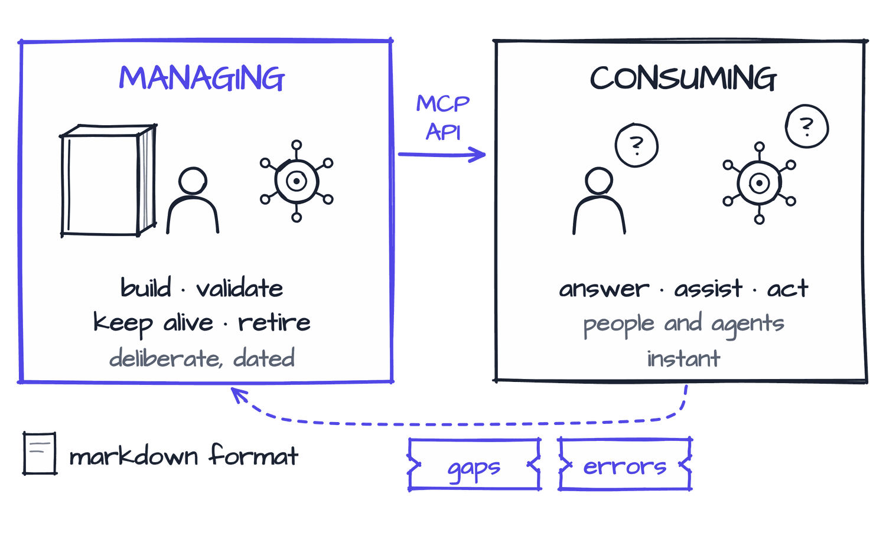
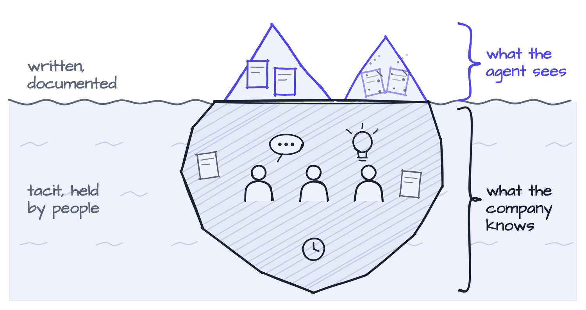
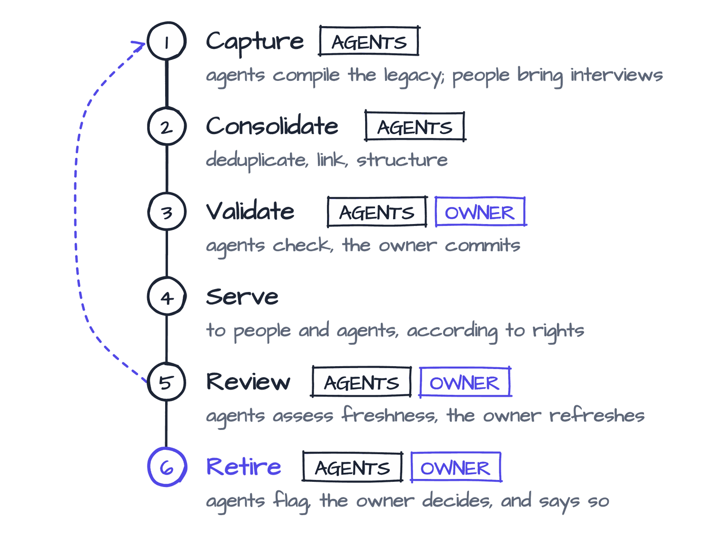
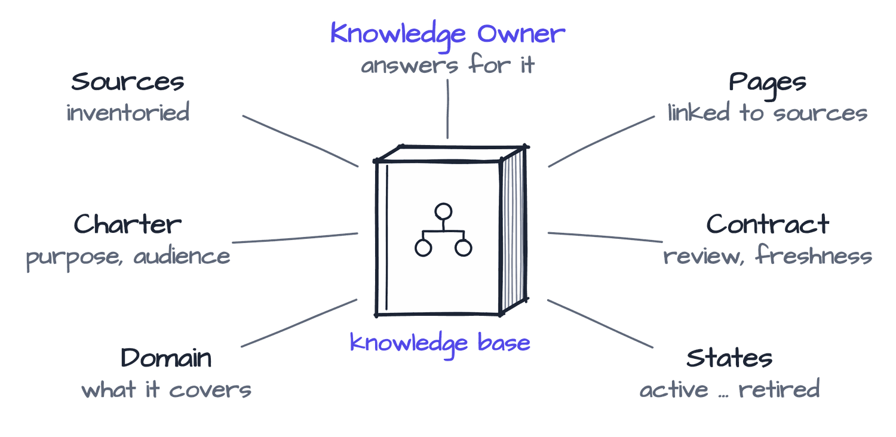
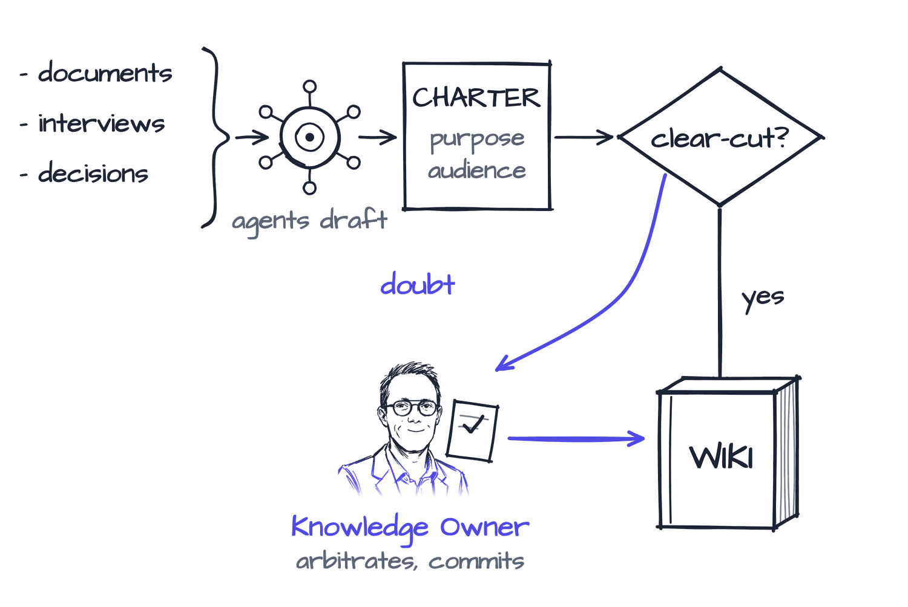

The Knowledge Mesh · Playbook · Version 2.5
Bridging knowledge management and agentic AI at scale
If only the company knew what it knows. A playbook to bring the right knowledge, in the right shape, to the right place at the right time, for people and AI agents alike.
Knowledge is a pillar of AI at scale, alongside data. It must be managed as infrastructure, separately from the way it is consumed.
Sections 1 to 4 set the foundations: why knowledge is an underestimated pillar of AI at scale, the separation between management and consumption, and the research it builds on. Sections 5 to 8 describe the model, the challenges it must address and its roles. Section 9 is the field guide to start; the closing section sums up what the Knowledge Mesh values.
Author: Benoit Rousseaux · Version 2.5 · 16 November 2026
FOREWORD
Why this playbook
At the beginning of the generative AI era, my first retrieval-augmented generation (RAG) projects aimed to limit hallucinations, yet answers still missed the mark. The reflex was to fix them with the system prompt. Working on the knowledge itself felt too complex, and AI was still expected to solve everything without being told what to rely on. The real question was elsewhere: what does the AI actually know about the company? In other words, what context does it work from? One of the first avenues was to turn documents into question-and-answer pairs, to make visible what the AI sees. The gap with what people believed they had written was often a surprise, and a lesson. It demystified AI and shifted attention from documents to knowledge. Every project since has started from that question.
Four observations stand out.
The first is about trust. As AI moves from answering to acting, delegating to an AI agent at scale means accepting that it will act on people’s behalf, across many tasks, without every step being checked, while accountability remains human. Few will accept this on faith: trust requires understanding what the agent relies on. That is why scale starts with knowledge that can be read, owned and traced.
The second is about organisation. An organisational gap cannot be fixed by prompt engineering alone. A better prompt does not give a document an owner, settle a contradiction or retire an outdated rule. Those are decisions people make, together.
The third is about pace. Technology will keep moving fast, faster than any plan can anticipate. Staying agile means investing in what lasts: how an organisation knows what it knows, and who stands behind it. Knowledge management reflects an organisation, more than its tools.
The fourth is about context. Getting the best from AI was first a matter of writing good prompts. It is becoming a matter of giving agents the right context, what practitioners now call context engineering. And context is only as good as the data and knowledge it is drawn from.
From these observations comes an intuition: knowledge deserves to be managed as a pillar of AI, alongside data.
The ambition of this playbook is to help align a shared vision. It offers a common foundation, the smallest set of principles that organisations, teams and technologies can share, so that each can translate it into its own context, at its own pace. Its success will show in the many ways it is adopted and adapted.
Benoit Rousseaux
OVERVIEW
Abstract
Knowledge management has thirty years of research, an international standard, dedicated roles and a market of tools. What is new is the reader. AI agents now consume a company’s knowledge directly, and act on it at scale. AI agents are systems built on AI models that pursue a goal, use tools and act on someone’s behalf; for short, the rest of this playbook calls them agents. What they do depends on the context they are given, and that context has to be steered and mastered, not left to chance. Yet when organisations prepare for AI, they invest in data, models and platforms, and often treat knowledge as a side issue. This playbook argues that knowledge deserves the same status as data: a pillar of AI at scale.
It builds a bridge between what knowledge management already knows and what agentic AI now requires. Its organising principle is a separation: managing knowledge is one job, consuming it is another. Its operating model is the Knowledge Mesh, openly inspired by the Data Mesh: knowledge bases owned by domains, each with a charter and a Knowledge Owner who commits to what it says, federated by a few shared standards.
The playbook borrows the rigour of an academic paper, sources and definitions, in plain language.
THE THESIS IN ONE LINE
Knowledge is a pillar of AI at scale, alongside data. It must be managed as infrastructure, separately from the way it is consumed.
What this playbook builds on, and what it adds
| It builds on | It adds |
|---|---|
| Thirty years of knowledge management research, methods and tools, which remain valid | That knowledge has been underestimated as a success factor in deploying AI at scale |
| The tacit, human side of knowledge, which lives with people and communities | That agents change who consumes knowledge, and therefore what “well managed” must mean |
| The Data Mesh, whose architecture it openly transposes | An operating model for knowledge that fits agents, and that each organisation can adapt |
| Today’s solutions, which already address many of the challenges described here | The fundamentals that let an organisation choose, combine and replace them, in a world where people and agents share the same knowledge |
Key concepts at a glance
| Concept | Definition in this playbook |
|---|---|
| Management and consumption | Two planes: knowledge is built, owned and governed in one, used by people and agents in the other |
| Knowledge base | The unit of the mesh: a domain, a charter, an owner, sources, pages, a contract and states |
| Knowledge Owner | The person who answers for a base: orients, arbitrates, commits and retires |
| Dynamic context | Context assembled at the moment of use, from governed bases, within the user’s rights, and traceable; the organisational side of context engineering |
| Knowledge Mesh | A network of domain-owned knowledge bases, federated by shared standards |
HOW SOURCES ARE USED
The playbook is written in its own words. Sources mark the landmarks and inspirations behind each part, and the few direct quotations appear in quotation marks. Each part closes with a short box naming the sources it draws on and what it takes from them. The full references, each with a two-sentence summary, are gathered at the end.
WHY
1. The underestimated pillar
“If only HP knew what HP knows, we would be three times more productive.” The sentence is attributed to Lew Platt, chief executive of Hewlett-Packard in the 1990s, long before generative AI. It named a gap every large organisation recognises: a company knows far more than it manages to use. Expertise stays in one corner, know-how does not travel, people spend their time searching.
The ambition it expressed has not changed: bring the right knowledge, in the right shape and quality, to the right place at the right time. What has changed is who needs it. Platt was talking about people, who could still ask a colleague. An agent cannot. What a company knows but has not made accessible, an agent will simply never know. And an agent that is not grounded in that knowledge, anchored in facts the company stands behind, can only produce what is plausible, not what is reliable. The first stake is therefore context. To understand a situation, an agent needs to reach two things: data, what the company records, and knowledge, what it means and how to act on it. Together they make up the context it works in.
Every company that has tried to put AI to work has learned the same lesson about data: garbage in, garbage out, even if it is not quite that simple. Data quality, ownership and governance are now standard items of any AI programme.
AI also changes the volume. Language models multiply the capacity to produce content: drafts, summaries, reports, generated pages. More content does not mean more knowledge. The more content there is, the more it needs to be traced, qualified and sorted, so that what counts as knowledge can be told apart from what merely sounds right.
Knowledge has received less attention. Knowledge, here, means what lets someone act well: the rule, the exception, the reason behind both, the trade-off made last year and why. The discipline exists; in most AI programmes, it simply had no seat at the table.
A mature discipline
Knowledge management is a mature field. Its central insight dates back to the 1990s: knowledge is created between people, more than stored in documents, as tacit know-how is put into words, shared and learned again. Companies took the idea seriously, appointed knowledge officers and built repositories. Many were disappointed, and the lesson stuck: a tool can store information, but knowledge only lives through the people and communities who use it. The field has since matured, up to an international standard for knowledge management systems. The methods exist. So do solutions, but they are often costly and ambitious, with a return that is hard to measure. What they long lacked were tools that people truly adopt, adapted to daily work. AI changes that. Before it helps people and agents consume knowledge, it can help manage it: drafting pages, linking sources, flagging contradictions, keeping content current. Knowledge management finally has tools that match its methods.
Why it was underestimated in the move to AI
Four reasons stand out. They are a practitioner’s reading, not a measured finding.
The model seemed to know. Large language models answer fluently on almost any subject. It is easy to forget that they know nothing specific about your company until you give it to them.
Retrieval was treated as engineering. RAG made company documents accessible to a model, and the problem was framed as search: chunking, indexing, ranking. Questions of authority, freshness and contradiction were left to the sources, which often nobody owned.
Governance followed data. AI programmes inherited the data governance agenda (privacy, quality, lineage, bias) and often stopped there. Unstructured knowledge sat between data teams, IT and the business.
Knowledge management was out of the room. In many organisations, knowledge management had become a support function after earlier waves, and was rarely part of AI steering.
The cost shows up at scale. A widely discussed MIT report finds that most organisations see no measurable return from generative AI, and points to systems that do not retain context or learn from feedback. Pilots run on clean, curated material; at scale, agents meet the real corpus.
Eight failure modes
The same patterns recur when AI meets the real corpus. Each has a recognisable symptom, a specific cost for agents, and a principle of this playbook that answers it.
| Failure mode | What it looks like, and what it costs agents | What answers it |
|---|---|---|
| Retrieval without curation | A retrieval layer is plugged into existing documents, and answers are corrected at the output, use case by use case. The same error is fixed ten times and never at the source. | Principle zero: separate management from consumption |
| The central bottleneck | A central team, whether knowledge, IT or data, carries the work alone, while the people who hold the knowledge are out of the loop. The base ages faster than it is corrected. | Domain ownership |
| The frozen snapshot | A base is built once, for a project, then left as it is. Nothing says it has gone stale; agents keep answering from it with the same confidence. | The lifecycle, and a contract with a review date |
| The accumulation trap | Content keeps growing, generated content included, and nothing is ever retired. Every new page dilutes the ones that matter. | Retirement as a step of the lifecycle |
| The tool-first programme | A platform is bought in place of an organisation. No one embodies the knowledge, practices do not change, and the tool fills with content no one stands behind. | The Knowledge Owner, and the change in roles |
| The canonical model fantasy | A single taxonomy, a single vocabulary, a single model is imposed on every domain. Local meanings are flattened, and agents lose the nuance that made the knowledge useful. | Composable bases under shared standards |
| The open door | Knowledge is exposed without regard to who may see it. Not all knowledge is meant for everyone: an agent that reads everything can show one person what was meant for another, or miss what they need. | Rights that follow the person |
| The untraceable answer | The agent answers or acts without saying which source, which version or whose authority it relied on. No one can validate the answer, correct the source, or explain the action afterwards. | Grounded context and traceable actions |
Each of these is a matter of organisation, which technology makes more visible, and more costly, once agents are involved. Each calls for an organisational answer, beyond prompt engineering or a better model.
What genuinely changes with AI agents
The fundamentals of knowledge management stay. Agents change three things around them. They change the reader: the main new consumer is a machine that knows only what has been made explicit. They change the scale: an error no longer misleads one colleague, it travels through every process an agent touches. And they change the economics: drafting and maintaining pages becomes cheap, so the effort moves to validation. Together, these raise the bar for what “well managed” means. The table sets what stays against what changes.
| What stays | What changes with agents |
|---|---|
| Knowledge is partly tacit and lives in people and communities | The main new consumer is a machine that knows only what has been made explicit |
| Knowledge needs owners, a lifecycle and retirement | Authority, date and status must be readable by machines, not only by colleagues |
| Codification has a cost | AI collapses the cost of drafting, linking and maintaining pages; the bottleneck moves to validation |
| Errors in documentation mislead some readers | Errors propagate systematically, to every agent, in every process |
| People find their way around gaps | Agents do not call a colleague: gaps become wrong answers or wrong actions |
This is where the playbook sits: as a bridge. It builds on knowledge management and translates its lessons into the terms of agentic AI at scale, and asks for knowledge to be treated as a pillar, alongside data.
KEY IDEA
Agents raise the bar upstream. The effort moves from consuming knowledge to building it: owned, validated, dated and traceable before any agent reads it.
SOURCES & INSPIRATIONS
[19] Platt, attributed (1990s) — the HP quote that frames the gap and the ambition
[16] ISO 30401 (2018) — shows that knowledge management is an established, standardised discipline
[4] Nonaka; Nonaka & Takeuchi (1994, 1995) — the central insight that knowledge is created between people
[6] McDermott (1999) — the lesson of the first wave: tools alone do not deliver knowledge management
[18] MIT NANDA (2025) — evidence of the gap between AI investment and measurable return
[1] Dehghani (2019) — failure modes of centralised platforms, named one by one, as a model for the failure modes; the central bottleneck
[2] Dehghani (2020) — technology advances that address volume but not the other dimensions of scale, behind the tool-first programme; governance that embraces several contexts rather than one canonical model
FOUNDATION
2. Principle zero: separate managing knowledge from consuming it
Think of an encyclopedia. Writing it and reading it are two different jobs. Editors choose the entries, check sources, settle disputes, retire what is wrong. Readers come with their own questions, in their own words, and never see the editorial process. The quality of the reading depends entirely on the writing, but the reader does not have to understand it.
Classic knowledge management knows this distinction well. In daily practice, though, companies have rarely worked this way. To find something, you had to understand the logic of whoever filed it. Managing and consuming were the same gesture, and every filing scheme was a bet on how people would search. Research at Bellcore in the 1980s showed how fragile that bet is: two people rarely choose the same word for the same thing. AI breaks that link: we can now ask in our own words against a corpus organised once, consistently. The separation becomes possible. This playbook makes it a principle. The Data Mesh offers a precedent: it keeps operational and analytical data in two planes, described as integrated yet separate, because they serve different needs. Dehghani is equally clear that this technical separation should not separate the organisation, its teams and its people: the same domains look after both. The separation proposed here works the same way. It separates roles and rhythms, not teams.
| Management plane | Consumption plane | |
|---|---|---|
| Purpose | Build, validate, keep alive, retire | Answer, assist, act, produce |
| Who | Knowledge Owners, helped by agents | Employees, assistants, business agents, document generators |
| Pace | Deliberate: reviewed, versioned, dated | Instant: at the moment of the question |
| Key question | What do we hold to be true, and who answers for it? | What does this person or agent need, right now? |
| Measured by | Coverage, freshness, contradictions resolved | Usefulness, adoption, time saved |
Three consequences make the approach pragmatic in a world where people and agents work side by side.
Each plane can change without breaking the other. Models, chat tools and agent frameworks will change many times. A well-managed knowledge base survives them all. Conversely, a new use case does not require reorganising the knowledge.
One effort, many uses. Knowledge kept once serves a newcomer, a support agent and a generated report alike. The investment is made in the management plane and pays off in every consumption.
A clear boundary. Consumers read; they do not rewrite while they work. What they run into, a gap or a contradiction, goes back to the management plane as a ticket. The base learns from its use without feeding on its own answers.

RAG, chat interfaces and agents all belong to the consumption plane. None of them is wrong. They simply need something upstream to read. The same holds for the many ways of bringing knowledge to a model, a list that keeps growing: what the model learned in training, retrieval (RAG), web search, fine-tuning or distillation. Each has its value, its cost and its prerequisites, depending on the use; knowledge built into a model’s weights is also tied to that model and hard to trace back to a source. Whatever the mode, what an agent can rely on depends on the quality and traceability of the knowledge it draws from: a matter of construction before consumption.
LINEAGE
3. Where the Knowledge Mesh comes from
The Knowledge Mesh openly stands on two foundations. It borrows its architecture from the Data Mesh, and its diagnosis from thirty years of research and practice in knowledge management. Being explicit about both is what makes it solid.
The Data Mesh started from the limits of centralisation
In 2019, Zhamak Dehghani described what many data teams had lived through: a central data lake, run by a team of highly specialised engineers, cut off from the business domains that produce and understand the data. The central team became a bottleneck, with frustrated consumers competing for a place in its backlog, while the people who knew the data had no ownership of it. Her answer was not a better lake but a paradigm shift, in architecture and organisation alike; technology, she wrote, is not the limitation. In 2020 she formalised it in four principles: domain-oriented decentralised data ownership and architecture, data as a product, self-serve data infrastructure as a platform, and federated computational governance. She presented them as a technology-agnostic model: existing tools appear in her texts as examples, and she expected practices and technologies to vary while the principles remain.
One point matters for knowledge. Dehghani is explicit that the mesh is not a landscape of fragmented, inaccessible silos: it is an intentionally designed distribution, held together by shared standards for interoperability and a common platform.
Knowledge management research had reached the same diagnosis earlier
Haridimos Tsoukas described the firm in 1996 as a distributed knowledge system: no one, not even management, can grasp it as a whole. Ikujiro Nonaka showed that knowledge is created close to practice, in the interplay between people, not in a central repository. Etienne Wenger located it in communities of practice. In 1999, Richard McDermott explained why the first wave of knowledge management tools disappointed: technology could store information, but knowledge depends on the people who use it and the communities that keep it alive. The same year, Morten Hansen, Nitin Nohria and Thomas Tierney distinguished two strategies: codification, which stores knowledge in documents, and personalisation, which connects the people who hold it. Most companies, they argued, should choose a dominant one.
AI changes that last trade-off. When agents can draft, link and maintain pages, codification no longer has to come at the expense of the people who know: the expert stays in charge, the machine does the clerical work.
It loosens another constraint. Organising knowledge has often meant heavy upfront work on classification and ontology before anything could be used. Ideally, both exist. But a base no longer has to wait for them: they can be built in parallel, with agents proposing structures and people validating them, so that the structure does not merely mirror the machine’s own reading. This fits the stance below: work starts on small perimeters, fragments are brought together at the moment of use and enriched in the meantime.
THE STANCE
Accept fragmentation and organise it, rather than pursue the single base. Knowledge is fragmented because it is distributed, situated and alive. Centralising it fights its nature; organising the fragments works with it.
SOURCES & INSPIRATIONS
[1] Dehghani (2019) — the diagnosis of the limits of centralised data platforms
[2] Dehghani (2020) — the four principles of the Data Mesh, transposed in section 5
[3] Tsoukas (1996) — the firm as a distributed knowledge system
[4] Nonaka (1994) — knowledge created close to practice
[5] Wenger (1998) — knowledge located in communities of practice
[6] McDermott (1999) — why technology alone did not deliver
[7] Hansen, Nohria & Tierney (1999) — the codification versus personalisation trade-off that AI now loosens
FOUNDATION
4. Fundamentals we build on
What is known about knowledge still holds with AI. Four established ideas become directly operational once agents are the readers.
Data, information, knowledge
The distinction is simple to state. Data records facts, information gives them meaning in a given context, and knowledge is what lets someone act on them. Thomas Davenport and Laurence Prusak described knowledge as “a fluid mix of framed experience, values, contextual information, and expert insight”. That is why knowledge cannot be reduced to well-organised data. The classic pyramid, which stacks data, information, knowledge and wisdom as successive refinements, is a useful picture, but it has been rightly criticised for that very shortcut. Knowledge carries judgement, and judgement always belongs to someone.
KEY IDEA
Data tells an agent what the company records. Knowledge tells it what the company means.
Tacit and explicit
“We can know more than we can tell,” wrote Michael Polanyi. Part of what experts know will never be fully written down. A Knowledge Mesh aims to make explicit what can be, and to show clearly where the rest lives: with whom, in which community.

The knowledge creation cycle
Nonaka and Takeuchi showed that knowledge is created as it moves between its tacit and explicit forms. People share know-how by working together, which they called socialisation. They put it into words, which is externalisation. Explicit pieces are then assembled into larger wholes, which is combination. And people make that explicit knowledge their own by using it, which is internalisation.
Read with agents in mind, the cycle is uneven. AI excels at combination and is a strong ally for externalisation: an interview, a meeting or a recorded walkthrough can become a draft page. Socialisation remains a human affair: people still learn from people. A knowledge strategy that overlooks this produces clean pages and empty expertise.
The lifecycle
Knowledge is born, lives and dies. Managing it means following it through that whole life, from the moment it enters a base to the moment it is withdrawn. Six stages mark that life, and each has someone responsible for it:
Capture: bring in sources, legacy documents, interviews, decisions.
Consolidate: deduplicate, link, structure into pages.
Validate: the Knowledge Owner commits to what the page says.
Serve: expose it to people and agents, according to rights.
Review: refresh on a known cadence or when a source changes.
Retire: withdraw what is obsolete, and say so.

The last stage is the one most often forgotten. An outdated document left in an index silently becomes a wrong answer. Living knowledge must be allowed to die.
MODEL
5. The Knowledge Mesh in brief
DEFINITION
A Knowledge Mesh is a decentralised network of living knowledge bases, owned by business domains, each described by a charter and built through auditable contributions from people and agents, federated by common standards so that everyone, human or agent, shares the same governed context.
Five principles. The first four transpose those of the Data Mesh. The fifth extends the way the Data Mesh treats quality, which it entrusts to the domains, with explicit quality metrics, rather than to the central certification of “golden” datasets.
| Data Mesh principle | Knowledge Mesh principle | What changes for knowledge |
|---|---|---|
| Domain-oriented ownership | Domain knowledge ownership | Knowledge is embodied and partly tacit: the owner answers for it, not just stores it |
| Data as a product | Knowledge as a self-describing product | Two kinds of consumers, people and agents; no base without a charter |
| Self-serve data platform | Self-serve knowledge platform | AI is not only hosted on the platform, it works inside it: drafts, links, flags contradictions |
| Federated computational governance | Federated knowledge governance | The goal is not to merge bases but to make them composable: shared identifiers, metadata, open access protocols |
| Data product quality, assured by the domain | Auditable knowledge construction | Where data quality is measured by metrics and service levels, knowledge quality is read through traceability: who proposed each change, who validated it, from which sources, and how to revert it |
The challenges a Knowledge Mesh must address
The principles say what a Knowledge Mesh is. The challenges say what it must make possible. They are stated as questions, because each organisation will answer them in its own way. They fall into three families, one for each side of the mesh: managing knowledge, consuming it, and federating the bases.
Managing knowledge. The first family concerns the management plane: how knowledge enters a base, how someone commits to it, and how it stays true over time.
| Challenge | What it asks |
|---|---|
| Compiling the legacy | How do scattered documents become sourced, consolidated pages? |
| Committing | Who validates, and how is that commitment visible to people and machines? |
| Keeping it alive | How are contradictions, staleness and gaps detected, and by whom? |
| Lifecycle | How is knowledge reviewed, quarantined and retired? |
| Auditable construction | How is every contribution proposed, reviewed, merged and reversed? |
Consuming knowledge. The second family concerns the consumption plane: how people and agents draw on knowledge at the moment they need it, within the right limits, and with a trace of what they relied on.
| Challenge | What it asks |
|---|---|
| Assembling context | How does an agent select and combine the right bases at the moment of use? |
| Rights | How do access rights follow the person an agent acts for? |
| Traceability | How can any answer or action be traced to the knowledge it relied on? |
| Reaching the tacit | How are the people who hold what is not written found and connected? |
Federating the mesh. The third family concerns the mesh itself: how bases owned by different domains are found, live side by side, and keep their value as tools change.
| Challenge | What it asks |
|---|---|
| Discovery | How are bases, their charters and their owners found? |
| Coexistence | How can bases be consumed alone or in combination, and analysed side by side, without being merged? |
| Shared standards | Which identifiers, metadata and protocols let bases compose? |
| Quality | How is the health of a base measured against its contract and its evaluation set? |
| Portability | How does knowledge outlive the tools that built it? |
Fundamentals before solutions
Solutions already address many of these challenges, and new ones appear every month: enterprise search, verified knowledge bases, content platforms with built-in agents, semantic layers. Many of them are useful, and some are very good. This playbook deliberately starts one step earlier, with the fundamentals that let an organisation choose, combine and replace them. In an agentic and hybrid world, where people and agents work from the same knowledge, one question comes first: what must be true of knowledge for both to rely on it? The answer shapes the choice of tools, and outlasts it.
Two vocabulary choices, to avoid confusion later. The Knowledge Mesh is the whole: the network, the platform and the common rules. The knowledge base is the unit: what a domain builds, owns and serves. One does not exist without the other.

SOURCES & INSPIRATIONS
[2] Dehghani (2020) — the four principles, mapped one by one; quality assured by the domains rather than by central certification of golden datasets, basis of the fifth principle; governance that embraces multiple interpretive contexts rather than one canonical model
[1] Dehghani (2019) — data products that are discoverable and interoperable, behind the federation challenges
MODEL
6. The knowledge base: entry point and destination
A knowledge base is the asset of the mesh. It is small enough to have one owner and one purpose, and complete enough to be useful on its own. It has seven parts:
A domain and a purpose: what it covers, for whom, and what it deliberately does not cover.
A charter: its purpose, its owner, its audience, how it is built. The charter commits the owner, guides the agent that drafts the pages and tells other agents when to consult the base.
A Knowledge Owner: the person who answers for it (section 7).
Sources: the documents, sites and contributions it is built from, each inventoried.
Pages: the consolidated knowledge, in an open, readable format, each page linked to its sources. This is the compiled layer Andrej Karpathy described as an “LLM wiki”: knowledge assembled once and kept up to date, rather than reassembled at every question.
A contract: how often it is reviewed, how fast a change in a source reaches the pages, what minimum quality it guarantees. Its health is measured against that contract.
States: active, under review, quarantined, retired. A page or a whole base can be withdrawn from use without stopping everything else.

An entry point
Every organisation sits on years of legacy documents: slides built for a talk no one gives anymore, scanned procedures, notes formatted three different ways. Building a base turns that sediment into an asset. And the exercise has a value of its own before any question is asked: it reveals the gaps, the duplicates and the contradictions no one could see. Preparing knowledge for an agent is, almost by accident, the first real audit of what the organisation knows.
A destination
Today, the base is fed by documents. Tomorrow, documents will increasingly be produced from it: an onboarding guide, a policy summary, a client brief, generated on demand as a view of what the base holds. The logic is inverted. One safeguard follows: what is generated from the base never flows back into it without going through the management plane. Otherwise the base ends up learning from itself.
KEY IDEA
The document is no longer the source of knowledge; it becomes one of its outputs.
Between entry and destination, a single base becomes an enabler for many use cases: a support assistant, a business agent, a training path, a decision memo. That is where the return on investment lies. Not in one more chatbot, but in an asset that every use draws on.
Bases that coexist
As bases multiply, a further question appears: how do they live together? The answer is coexistence rather than fusion. Each base keeps its owner, its charter and its pace. What bases share are identifiers, metadata and a common way to be reached.
Coexistence opens several uses at once. Some agents will consume a base for what it contains, to answer a question or carry out a task. Others will analyse a base on its own, to measure its coverage, its freshness or its gaps. Others again will read several bases in a combined context of use, where overlaps and contradictions between domains become visible and can be sent back to the owners concerned. Merging the bases would lose that view; letting them coexist keeps it.
ROLES
7. The Knowledge Owner: authority, not probability
A language model produces the most plausible answer. A company needs something else: an answer someone stands behind. That is the role of the Knowledge Owner, and it is the central idea of this playbook. Knowledge needs a face.
Embodiment is what makes governance real. A base can be governed because someone decides for it, and audited because someone answers for it. Without that person, rules apply to no one and an audit finds no one to question. The Knowledge Owner embodies the base: its scope, its choices and its limits.
The Knowledge Owner is the person accountable for a base. Data management already separates two roles: the owner, accountable for an asset, and the steward, who looks after it day to day. In a Knowledge Mesh, agents take on most of the stewardship. They draft pages, check sources, flag contradictions and assess freshness. The owner keeps what cannot be delegated:
| Responsibility | What it means |
|---|---|
| Orient | Decide what the base is for, what it covers and what it does not |
| Arbitrate | Settle contradictions and ambiguous cases, which agents escalate with a diagnosis |
| Commit | Validate what the base says, and put their name on it |
| Listen | Receive what consumers report, agents and people alike: drift, gaps, errors, unanswered questions |
| Retire | Decide what is no longer valid |
The owner does not reread everything. Clear-cut changes go through; the owner handles the exceptions. That is what keeps the role sustainable.

Listening matters as much as deciding. Agents that consume a base are its most attentive readers: they notice when answers drift, when a question finds no page, when two pages disagree. Their signals, together with those of people, flow back to the owner, so that the base improves through its use without feeding on its own answers.
A commitment, dated and open to challenge
Review does not guarantee truth, and pretending otherwise would be dishonest. What the owner commits to is narrower and more useful: “this is what the company holds to be true, as of this date, and I answer for it.” The statement is dated, sourced and open to challenge. It can be corrected, and the correction is traced. A probable answer, improvised at the moment of the question, offers none of that. This is also what makes delegation possible: people entrust an agent with a task when they can see whose knowledge it acts on.
KEY IDEA
The owner turns a probability into a commitment. That is what an organisation can build on, and what an agent can be held to.
No owner, no authority. A base without an owner is just one more document, cleaner perhaps, but just as orphaned. And one condition is not negotiable: the time an owner spends on a base must be recognised as part of their job. Otherwise the role becomes a chore, and the base slowly dies.
CONSUMPTION
8. Dynamic context
The need for grounding
Before an agent can decide or act, it needs to stand on solid ground: facts, rules and reasons that are established, dated and owned. Linguists Herbert Clark and Susan Brennan called the process of building that shared basis grounding: the mutual knowledge on which any joint action rests. The same word is now used in AI for anchoring an answer in sources. The overlap is not a coincidence. Whether between two people or between a company and its agents, nobody can act together without first agreeing on what is taken to be true.
Grounding is what separates an answer that sounds right from a decision that can be defended. It requires two things: knowledge that someone stands behind, which is the work of the management plane, and a way to bring it to the agent at the moment it acts, which is the work of dynamic context.
KEY IDEA
No delegation without grounding. Decisions and actions must be anchored in knowledge the company holds to be true, not in what a model finds plausible.
From prompt to dynamic context
Since the advent of generative AI, getting the best out of a language model has been a matter of good practice, gathered under the name of prompt engineering: a role, a mission, a few paragraphs of background written by hand into a prompt. Since 2025, practitioners have moved on to context engineering, the discipline of choosing what goes into a model’s working memory. The shift is right about one thing: the quality of an answer depends on the context more than on the model.
The Knowledge Mesh adds the organisational side that context engineering calls for: where good context comes from, and who stands behind it.
DEFINITION
Dynamic context is context assembled at the moment of use, from governed knowledge bases, within the rights of the person on whose behalf the agent acts.
Four properties distinguish it from a prompt:
Assembled, not written. The agent selects the bases it needs, guided by their charters, and combines them at the point of use. A cross-functional question draws on several domains without a global model having been negotiated upfront.
Governed at the source. What enters the context has an owner, a date and a status. A quarantined page simply does not appear.
Rights follow the person. An agent sees what the person it serves is allowed to see, no more.
Traceable. Every element of the context points back to a page, and every page to its sources and its owner. Whatever an agent relied on to act can be inspected afterwards.
Regulation points the same way, within a narrower scope. For high-risk AI systems, the European AI Act requires automatic logging to ensure the traceability of how a system functions, effective human oversight, and the retention of logs by those who deploy it. Most knowledge agents will not fall into that category. It is still reasonable to aim for the same capability everywhere: being able to trace what an agent did, and which knowledge it relied on, is what makes it possible to understand, validate and trust the adoption of agents at scale.
This requires standard access. Open protocols such as the Model Context Protocol, introduced in 2024, let any agent query any base in the same way. The protocol may change; the principle will remain.
This is where principle zero pays off. Dynamic context is the consumption plane at its most demanding. It is only as reliable as the management plane behind it.
SOURCES & INSPIRATIONS
[17] EU AI Act, Arts. 12, 14 and 26 (2024) — traceability and human oversight required for high-risk systems, extended here as good practice for all agents
[21] Clark & Brennan (1991) — grounding as the shared basis for joint action, applied to agents
[13] Anthropic (2025) — the notion of context engineering, which dynamic context extends
[14] Anthropic (2024) — the Model Context Protocol, as an example of open access standard
PLAYBOOK
9. Field guide: start, grow, avoid
Start small, and real
Whatever the tools, the first steps look alike in most organisations. They aim at a first base that is useful quickly, owned by someone and measured from the start, so that what is learned on one domain can serve the next.
Pick one domain with a real pain: questions asked again and again, answers that vary from one person to the next.
Name one Knowledge Owner who wants the role, and give them time for it.
Write the charter in one page: purpose, audience, scope, what is out of scope.
Compile the legacy: let agents turn the existing documents into a first set of sourced pages, then let the owner validate them. Expect to discover gaps; that is part of the value.
Build an evaluation set: the questions the domain actually receives, with the answers the owner expects. Every change, of content or of model, is then measured against it.
The mesh is a trajectory
No company starts with a mesh. It usually starts with a common foundation: one platform, a few standards, the first bases, often run by a small central team. That is consistent with the mesh: Dehghani herself treats the self-serve platform as a precondition of it. Much of that platform can be assembled from existing tools; what has to be built is the way they are composed, and the standards that let bases move between them. The mesh appears as domains take ownership one after another, and as the central team moves from building bases to providing the platform and the rules. Starting centrally is a sound first step; the aim is to move beyond it.
RULE OF THUMB
Centralise the means, decentralise the knowledge.
Interoperability
A knowledge base is built to last longer than the technologies that serve it. Models, agent frameworks and access protocols will change several times over its life, and knowledge must be able to follow without starting over each time. That calls for simple, open and evolvable formats: readable text pages, explicit metadata, stable identifiers, links that make sense to a person as well as to a machine, and access through open protocols rather than proprietary connectors.
The test is simple: if the tool that built a base disappeared tomorrow, could the knowledge be read, moved and served by another one? If the answer is no, the company does not own its knowledge; its tool does.
Three levels of delegation
Delegating to agents is a gradual decision, taken domain by domain. Trust grows as people understand what agents rely on and see results hold over time. Three levels mark that progression, and each is reached on evidence.
| Level | Who decides | Condition to move on |
|---|---|---|
| Assistance | People read the answer and remain the filter | Base validated, sources traced |
| Delegation | Agents act; every action is traceable to the knowledge it relied on | Evaluation results stable over time; owner arbitrates exceptions |
| Autopilot | Sources flow into the base without human review, under continuous quality monitoring | Proven quality on the domain; ability to quarantine instantly |
An agent may always protect on its own, for instance by quarantining a doubtful page. It should never loosen a rule on its own.
SOURCES & INSPIRATIONS
[2] Dehghani (2020) — the self-serve platform as the condition for domain autonomy, basis of the trajectory; success measured by use across the mesh rather than volume governed
[1] Dehghani (2019) — interoperability governed by global standards as a foundational pillar of distributed systems
CLOSING
What it values, what stays open
This playbook started from a diagnosis: the failure modes that appear when agents meet a company’s real knowledge, from retrieval without curation to the untraceable answer. Each of them is a matter of organisation more than of technology. The playbook answered with a separation between managing and consuming knowledge, five principles transposed from the Data Mesh, and a map of the challenges every organisation will meet. Five preferences sum up that answer: each one favours a way of working, without dismissing the alternative.
Five things the Knowledge Mesh values
| The Knowledge Mesh values… | …more than | Because |
|---|---|---|
| Curating the source | Correcting the answer | A correction made once, upstream, serves every use downstream |
| Committed knowledge | Plausible answers | An agent can rely on what someone stands behind; from the rest, it can only guess |
| Owned bases | A single repository | Knowledge stays close to those who hold it, and bases coexist rather than merge |
| Retiring knowledge | Accumulating content | What is withdrawn on time protects every answer that follows |
| Traceable action | Opaque assistance | What can be traced can be understood, corrected and trusted |
The second column still has value: answers will always need some correction, and a shared repository can be useful. The Knowledge Mesh simply puts the first column first.
What stays open
This playbook is meant to be read alongside the knowledge management literature, and extended by those who put it to work. Four questions remain open:
How can the value of a living knowledge base be measured by its use, rather than by the volume of pages it holds?
How can the Knowledge Owner role become a form of recognition rather than one more duty, and how far can stewardship be handed to agents while keeping the human judgement that makes a base worth trusting?
How can the approach stay simple, and rely on open standards rather than build its own?
On the consumption side, how can fragmented knowledge be consumed through a simple, single entry point, without recentralising how it is managed?
The aim is a shared vision more than a single recipe: a common foundation, the smallest set of principles from which each organisation can build its own Knowledge Mesh, with its own tools and at its own pace. Its value will show in the variety of its adoptions.
A well-made mind
« Plutôt la tête bien faite que bien pleine. »
A well-made mind rather than a well-filled one.
Michel de Montaigne, Essais, I, 26
For Montaigne, a well-made mind is not the one that holds the most. It is the one that can judge, sort and order what it knows, and put it to use. He does not dismiss knowledge: a well-made mind is not built in a vacuum. He ranks the qualities of the mind, and places discernment above accumulation.
Companies have spent decades filling their heads: drives, intranets, document libraries. Agents now ask them for a well-made one: knowledge that is sorted, organised, owned and kept alive, so that it can be used with judgement. That is a matter of organisation more than of tools: of ownership, and of someone willing to say: this is what we hold to be true, and I answer for it.
SOURCES & INSPIRATIONS
[15] Montaigne (1580) — the well-made mind, quoted: discernment and order above accumulation
REFERENCES
Annotated sources
This playbook deliberately draws on several disciplines. Knowledge is only partly a technical question: it is also social, cognitive and organisational, and the sources reflect that balance. Twenty-one references span eight families, from the sociology of organisations to the current practice of AI.
| Family | What it brings to the playbook | Sources |
|---|---|---|
| Sociology and organisation | Knowledge as distributed, social and lived in communities; why tools alone did not deliver | [3] [4] [5] [6] [7] |
| Philosophy | The limits of what can be written down; the well-made mind over the full one | [10] [15] |
| Language and cognition | Grounding as the shared basis of joint action; why filing and finding diverge | [20] [21] |
| Information science | What distinguishes knowledge from data and information | [8] [9] |
| Data architecture and management | The mesh model, ownership and stewardship | [1] [2] [11] |
| Standards and regulation | Knowledge management as a recognised discipline; traceability of agents | [16] [17] |
| AI practice and field evidence | Compiled knowledge, context engineering, open protocols, and the gap at scale | [12] [13] [14] [18] |
| Management practice | The gap between what a company knows and what it uses | [19] |
Each source is summarised in two sentences, to show what this playbook takes from it.
[1] Dehghani, Z., How to Move Beyond a Monolithic Data Lake to a Distributed Data Mesh, martinfowler.com (20 May 2019).
Describes the failure modes of centralised data platforms: monolithic, organised around pipeline stages, and run by hyper-specialised teams cut off from the business domains. Proposes a data mesh in which domains own and serve their data as discoverable, trustworthy, self-describing products, on a self-serve platform, under global standards for interoperability.
[2] Dehghani, Z., Data Mesh Principles and Logical Architecture, martinfowler.com (3 December 2020).
Formalises the four principles of the Data Mesh: domain-oriented decentralised data ownership and architecture, data as a product, self-serve data infrastructure as a platform, and federated computational governance. Keeps operational and analytical data as separate planes and describes a governance that seeks interoperability rather than a single canonical model.
[3] Tsoukas, H., The Firm as a Distributed Knowledge System: A Constructionist Approach, Strategic Management Journal 17(S2), 11–25 (1996).
Argues that a firm’s knowledge is inherently distributed and cannot be surveyed or held as a whole by any single mind, management included. The managerial task is therefore to connect and coordinate knowledge rather than to centralise it.
[4] Nonaka, I., A Dynamic Theory of Organizational Knowledge Creation, Organization Science 5(1), 14–37 (1994); Nonaka, I. and Takeuchi, H., The Knowledge-Creating Company, Oxford University Press (1995).
Theorises organisational knowledge creation as a continuous conversion between tacit and explicit knowledge, through socialisation, externalisation, combination and internalisation (SECI). The book illustrates it with Japanese companies and shows the role of middle managers in turning individual insight into organisational knowledge.
[5] Wenger, E., Communities of Practice: Learning, Meaning, and Identity, Cambridge University Press (1998).
Presents learning as social participation within communities of practice that share a domain, a practice and a repertoire. Knowledge, in this view, lives in practice and in the communities that sustain it, not only in documents.
[6] McDermott, R., Why Information Technology Inspired but Cannot Deliver Knowledge Management, California Management Review 41(4) (1999), doi:10.2307/41166012.
Explains why early knowledge management systems disappointed: information technology can store and move information, but knowledge is tied to people, their thinking and their communities. Recommends building communities and combining human and technical systems rather than relying on repositories alone.
[7] Hansen, M., Nohria, N. and Tierney, T., What’s Your Strategy for Managing Knowledge?, Harvard Business Review (1999).
Distinguishes two knowledge management strategies: codification, which stores knowledge in documents for reuse, and personalisation, which connects people who hold it. Argues that firms should pursue one predominantly, in line with their competitive strategy.
[8] Davenport, T. and Prusak, L., Working Knowledge: How Organizations Manage What They Know, Harvard Business School Press (1998).
Offers a practical definition of knowledge as framed experience, values, contextual information and expert insight, distinct from data and information. Describes how organisations generate, codify and transfer knowledge, and why culture matters as much as technology.
[9] Ackoff, R., From Data to Wisdom, Journal of Applied Systems Analysis 16 (1989); Frické, M., The Knowledge Pyramid: A Critique of the DIKW Hierarchy, Journal of Information Science 35(2) (2009), doi:10.1177/0165551508094050.
Ackoff popularised the hierarchy from data to information, knowledge and wisdom. Frické criticises it as unsound, arguing that knowledge is not obtained by simply refining data.
[10] Polanyi, M., The Tacit Dimension, Doubleday (1966).
Introduces tacit knowledge with the observation that “we can know more than we can tell”. Shows that all explicit knowledge rests on a tacit foundation of skills and judgement that resists full articulation.
[11] DAMA International, DAMA-DMBOK: Data Management Body of Knowledge, 2nd ed., Technics Publications (2017).
Reference framework for the data management profession, covering governance, quality, metadata and architecture. It defines the governance roles, including owners accountable for data and stewards responsible for its day-to-day care.
[12] Karpathy, A., LLM Wiki (gist, 4 April 2026).
Describes a pattern in which a language model reads raw sources and integrates them into a persistent, interlinked Markdown wiki, noting contradictions and checking for stale claims, while a human curates sources and asks questions. Knowledge is compiled once and kept current, rather than retrieved and re-derived at every query, for personal as well as team use.
[13] Anthropic, Effective context engineering for AI agents (29 September 2025).
Frames context as a finite resource that must be curated for each step an agent takes, beyond the writing of a good prompt. Discusses techniques such as just-in-time retrieval, compaction and structured note-taking to keep context relevant.
[14] Anthropic, Introducing the Model Context Protocol (25 November 2024).
Announces an open standard that lets AI applications connect to data sources and tools through a common client-server protocol. It aims to replace one-off integrations with a single, interoperable way for agents to access context.
[15] Montaigne, M. de, Essais, I, 26, “De l’institution des enfants” (1580).
Essay on the education of children, in which Montaigne prefers a well-formed judgement to an accumulation of learning. It is the origin of the phrase “plutôt la tête bien faite que bien pleine”.
[16] ISO, ISO 30401:2018 Knowledge management systems — Requirements (November 2018; amended 2022 and 2024, revision in progress).
International standard that sets requirements for establishing, maintaining and improving a knowledge management system in an organisation. It treats knowledge management as a managed system with leadership, roles and continual improvement, like quality or information security.
[17] European Union, Regulation (EU) 2024/1689 (Artificial Intelligence Act), Article 12 (Record-keeping), Article 14 (Human oversight) and Article 26 (Obligations of deployers of high-risk AI systems) (2024).
Requires high-risk AI systems to log events automatically over their lifetime, to ensure a level of traceability of their functioning, and to be designed so that people can oversee, override or stop them; deployers must keep the logs for at least six months. These obligations apply to high-risk systems only; the playbook extends the principle to all agents as good practice, not as a legal requirement.
[18] MIT Media Lab, Project NANDA, The GenAI Divide: State of AI in Business 2025 (preliminary report, July 2025).
Reports that most organisations studied see no measurable return from their generative AI initiatives despite significant investment. It attributes the gap largely to systems that do not retain context, adapt or learn from feedback.
[19] Attributed to Platt, L., chief executive of Hewlett-Packard (1990s): “If only HP knew what HP knows, we would be three times more productive.” Widely reported; the title of O’Dell, C. and Grayson, C. J., If Only We Knew What We Know: Identification and Transfer of Internal Best Practices, California Management Review 40(3) (1998), echoes it.
An attributed quotation, reported in several variants (“productive”, “profitable”), with no primary source located. It has become a slogan of knowledge management; O’Dell and Grayson’s article on the internal transfer of best practices takes up its formula in its title.
[20] Furnas, G., Landauer, T., Gomez, L. and Dumais, S., The Vocabulary Problem in Human-System Communication, Communications of the ACM 30(11), 964–971 (1987).
Shows experimentally that two people choose the same word for the same object less than 20% of the time. Concludes that systems relying on a single designer’s vocabulary fail most users, and calls for many access routes to the same item.
[21] Clark, H. and Brennan, S., Grounding in Communication, in Resnick, L., Levine, J. and Teasley, S. (eds.), Perspectives on Socially Shared Cognition, American Psychological Association, 127–149 (1991).
Defines grounding as the collective process by which participants in a conversation build common ground, the mutual knowledge and beliefs that joint action requires. Shows that the effort needed depends on the purpose and the medium of communication.